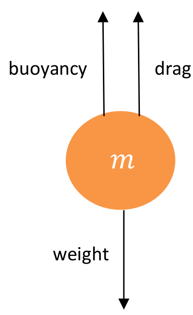

Section1.4Adding Resistance – This Looks Like a Job for Substitution!
Up to now, we have ignored any sort of air resistance. We will start to consider resistance (drag) in such problems. It turns out that modeling projectile motion with drag is a more complicated matter. In general, resistance in a medium is modeled to be a function of velocity. You’ve probably experienced this if you held your hand out a car window while it was moving. The faster the car went, the more force you felt on your hand. Likewise, the faster you moved your hand under water, the more force you felt on it. Many things affect the drag (speed, viscosity of the medium, shape and size of the object, turbulence). To keep a model simple, for a medium with a relatively high viscosity and a relatively small object we will assume that the drag is proportional to the velocity of the object. An example of this is a grain of sand falling in water. For a medium with a relatively low viscosity, such as air, and a relatively large object, the drag is assumed to be proportional to the square of the velocity. This would be the model to use for a baseball falling in the air.
To get a really accurate picture, one could use both a linear term and a quadratic term in the drag, but we will keep it simple at this point and keep these separate. We will look at the simpler model of linear drag and look at quadratic drag a little later and re-examine a ball falling in air.
Example1.7.
To look at linear drag, let’s look at the case of a grain of sand of mass \(m\) descending in water. To model this, let \(y(t)\) be distance the sand has fallen (so the positive \(y\) axis is pointing downward), with \(y(0)=0\) representing the surface of the water. If we draw a diagram of the sand, there are three forces we need to consider: the weight of the object, the buoyancy of the object, and the drag.

If we denote the acceleration due to gravity by \(g\text{,}\) then the weight of the sand is \(mg\text{.}\) The drag, which we assume is linear, is proportional to the velocity, so we will denote this by \(-Rv\text{,}\) where \(R\)is a constant and \(v=\dfdx{y}{t}\) is the velocity. Notice that this force is negative as it points up (the negative direction). The buoyancy is really just the upward force that water would apply if the sand wasn’t there. That is, it is the weight of the water that the grain of sand displaces. This is just \(m_wg\text{,}\) where \(m_w\) is the mass of the water displaced.
Problem1.8.
(a)
Use Newton's Third Law, (\(F\))orce=(\(m\))ass\(\cdot\) (\(a\))cceleration to show that
Compute \(v\text{.}\) This will be the terminal velocity of the sand settling in the water. Notice that this should be independent of \(v_0\text{.}\) How does your answer for terminal velocity depend on \(M=m-m_w\) and \(R\text{?}\) Does this make sense physically?
The above problem used the technique of substitution and is the integration analog of the chain rule, which itself was the technique of substitution applied to differentiation. As with differentiation, this did not actually compute the integral, but made it simpler to apply formulas and techniques with which we are already familiar. This technique of substitution is very powerful and allows us to integrate differentials which are not in our table. We already saw one example in our previous problem. For another, consider that in the table, we had \(\int\sin(x)\dx{x}\) and \(\int\cos(x)\dx{x}\text{,}\) but we did not have \(\int\tan(x)\dx{x}\text{.}\)
Since \(\tan(x)=\frac{\sin(x)}{\cos(x)}\) we now have the tools to do this one. If we make the substitution \(z=\cos(x)\text{,}\) then \(\dx{z}=-\sin(x)\dx{x}\) and so \(\dx{x}=\frac{-\dx{z}}{\sin(x)}\text{.}\)
Use a similar substitution to compute \(\int\cot(x)\dx{x}\)
There are no wrong substitutions, just unhelpful ones. For example, when computing \(\int\tan(x)\dx{x}\text{,}\) we could have let \(z=x\text{.}\) In that case we would have \(\int\tan(x)\dx{x}=\int\tan(z)\dx{z}\) which though correct, is not very helpful.
Another approach would be to let \(u=\tan(x)\) so that \(\text{,}\) and \(\dx{u}=\sec^2(x)\dx{x}\text{.}\) In that case we have
Although this is a doable integral, this approach seems like it will be much harder than our original strategy so we're inclined to abandon it immediately.
A comparably bad choice appears to be \(u=\sin(x)\) so that \(\dx{u}=\cos(x)\dx{x}\) or \(\dx{x}=\frac{\dx{u}}{\cos(x)}\text{.}\) In this case we have
which is nearly the same, formally, as equation (1.1). The only difference seems to be that the "\(+\)" in the denominator became a "\(-\text{.}\)"
Problem1.10.
On the other hand we now know that \(\int\tan(x)\dx{x}=\ln(\sec(x)+c\) and we can use this knowledge. Suppose we need to compute \(\int\frac{u}{1+u^2}\dx{u}\) or \(\int\frac{u}{1-u^2}\dx{u}\text{.}\) The same substitution we used to transform these into the integral \(\int\tan(x)\dx{x}\) will work in reverse.
The integrals in Problem 1.10.a and Problem 1.10.b can be evaluated by means of several different substitutions as we've seen. There are others that will also work but our principle point for now is that no substitution is "wrong", some result in a new integral that is easier than the original and some will not. If our goal is simply to evaluate the integral we'll want to look for the simplest method we can find.
(a)
Find a simpler substitution than the one we used in Problem 1.10.a to evaluate the integral
The good news with all of this is that you can do any substitution you wish and as long as it is performed correctly, it is not wrong.
The bad news is that you can do any substitution you wish, and as long as it is performed correctly, it is not wrong -- but it may not be helpful. After substituting you may get a new integral you don't know how to do. You may get one no one knows how to do. In that case you'll have to try again.
Notice that we can bring the \(1/2\) outside the integral because it is a constant, but since \(\frac{1}{x}\) is not a constant (it depends on \(u\)) we cannot do the same with with it. We could rewrite \(x = \sqrt{u}\) , so that
This is all correct, but leads to an integral far worse than the original, especially if you notice that \(x\) is \(3\) “almost” the derivative of \(x + 1\text{.}\) It is off by a factor of \(3\text{,}\) but as we’ve seen, constants can be brought outside of the integral, so this is not really a problem. So let’s make \(y = x + 1\) , so that \(\dx{y} = 3x \dx{x}\text{.}\) Thus
So what’s the definitive answer on a substitution? Unfortunately, there is none. Basically, you can try anything. If it works, great! If it doesn’t, don’t do something incorrectly to try and force it. Try something else. Something you can look for is parts of the integrand (the thing you are integrating) which are differentials of other parts of the integrand. But there are no guarantees. This is what makes integration harder than differentiation, much as long division is harder than multiplication. But try something! As you practice, you will gain more experience, so make sure you start looking for things that you have seen before. And Practice, Practice, Practice!
In Differential Calculus you saw that while it is not generally true that
there are certain pairs of functions which are exceptions; for which equation (1.3) is true. Let’s explore this problem in more detail. We will switch to prime notation for aesthetic reasons.
Apply equation (1.4) the function \(f(x)=x^n\) and compare this to the results in Problem # 60 above.
(c)
Suppose \(f(x)=e^x\text{.}\) What would \(g(x) \) be in this case?
Problem1.14.
We've integrated the trigonometric functions \(\sin(x){}\text{,}\)\(\cos(x){}\text{,}\)\(\tan(x){}\text{,}\) and \(\cot(x){}\text{.}\) Now we will deal with secant and cosecant.